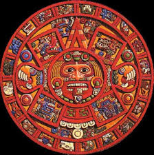

Click on this picture for more information!
"The Mayas did make prophecies, about events that, in their cyclical conception of history, could be repeated in the future," said Barrera, of the National Institute of Anthropology and History.

Click here to see reasons why scientists say it's fake
Click here to get more info sent to you via email